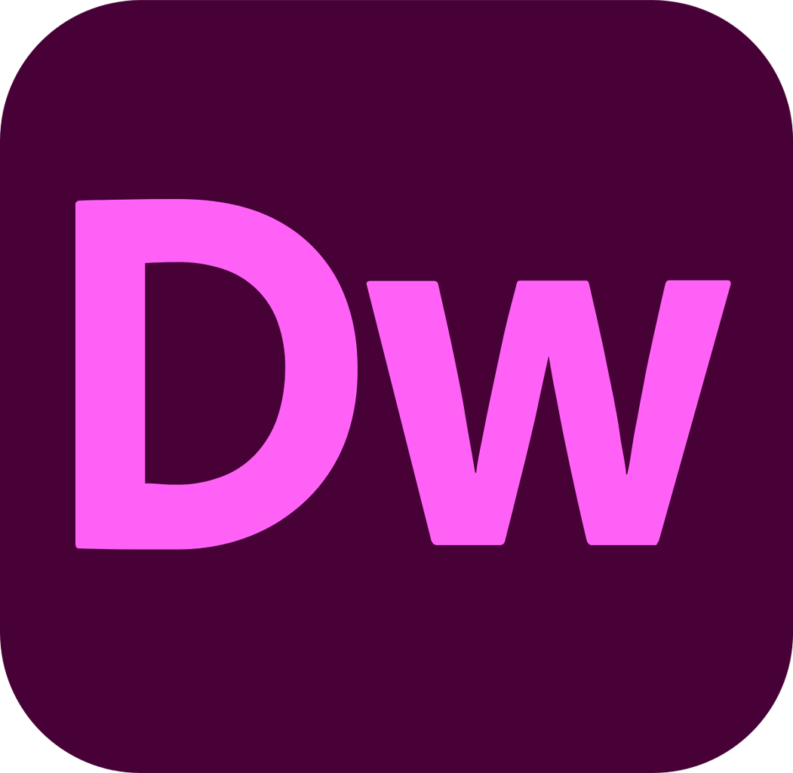
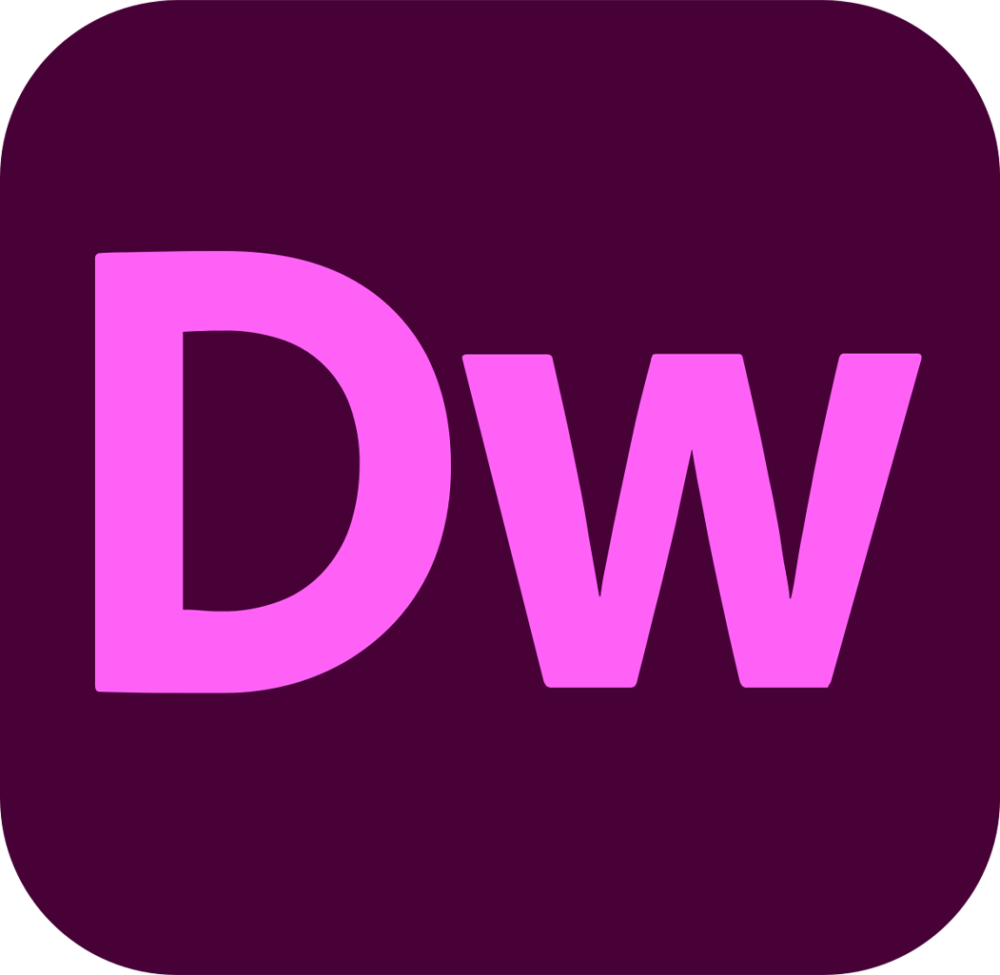

O meni
Studentkinja treće godine Grafičkog dizajna sa izraženom strašću za vizuelnu komunikaciju i kreativno rešavanje problema. Vešto koristim standardne dizajnerske programe i uživam u razvijanju inovativnih rešenja koja spajaju funkcionalnost i estetiku. Komunikativna i timski orijentisana, ali i samostalna u radu na projektima. Moj cilj je da u svaki projekat unesem sveže i kreativne ideje i da nastavim da rastem kao svestrana dizajnerka.
Skills
- Adobe Photoshop, Illustrator, InDesign (napredan nivo)
- Digitalna ilustracija i tipografija
- Priprema materijala za štampu
- Dizajn vizuelnog identiteta i brendiranje
- Dizajn za društvene mreže
- Osnove UI/UX dizajna
- Kreativno razmišljanje i rešavanje problema
- Efikasna komunikacija i timski rad

Zašto baš ja?
Zaposliti mene znači dobiti kreativnu i posvećenu osobu koja u svaki projekat unosi kombinaciju svežih ideja i tehničkog znanja. Imam razvijen snažan osećaj za estetiku i vizuelnu komunikaciju, ali i disciplinu i odgovornost u radu. Brzo učim, otvorena sam za nove izazove i lako se prilagođavam različitim zadacima i timskim okruženjima. Verujem da mogu doprineti kvalitetnim i originalnim rešenjima koja će unaprediti vizuelni identitet i komunikaciju svakog projekta ili brenda.
Soft Skills
- Kreativnost i inovativno razmišljanje
- Komunikativnost i aktivno slušanje
- Timski rad i saradnja
- Organizovanost i pouzdanost
- Fleksibilnost i prilagodljivost
- Kritičko i analitičko razmišljanje
- Spremnost za učenje i usavršavanje
- Upravljanje vremenom i poštovanje rokova


 
